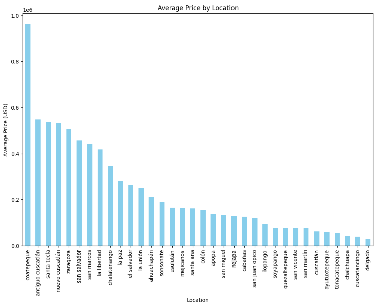
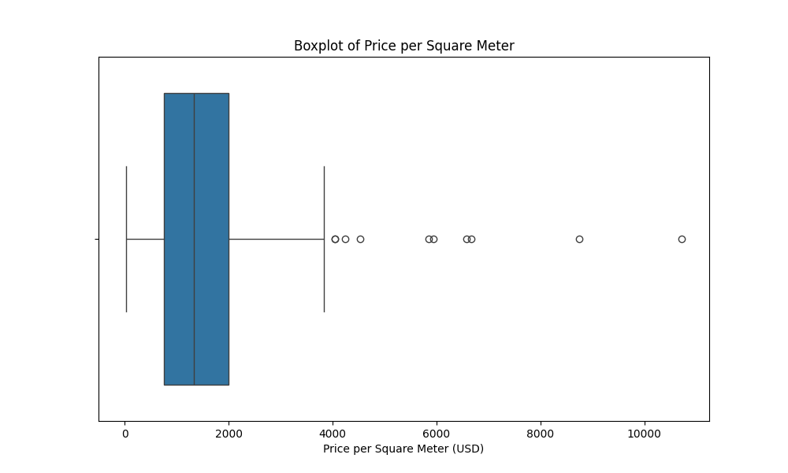
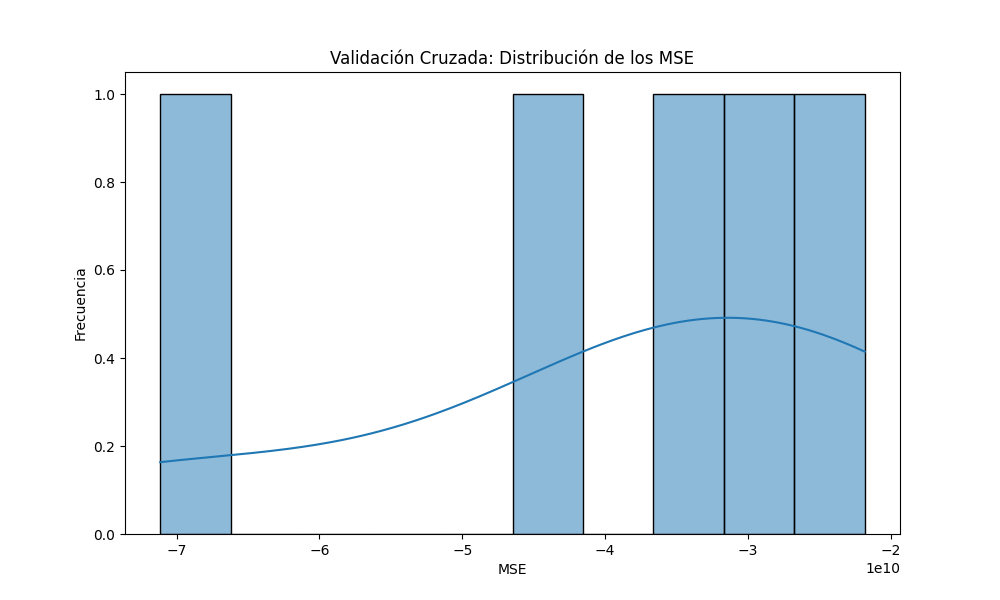
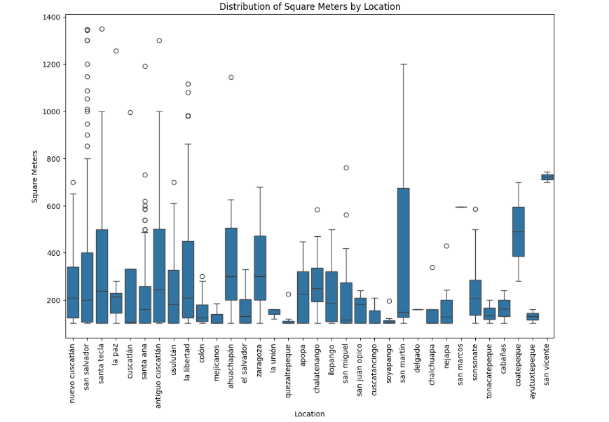
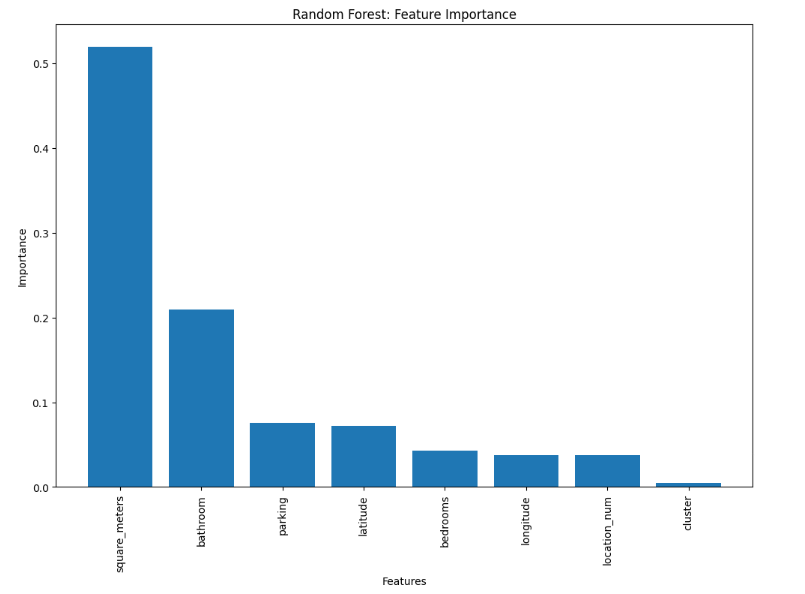
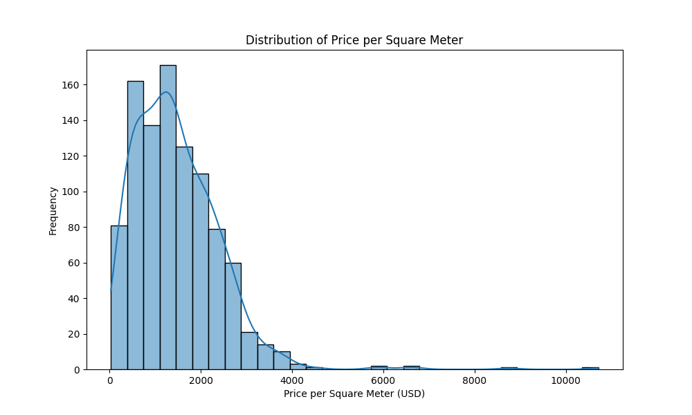
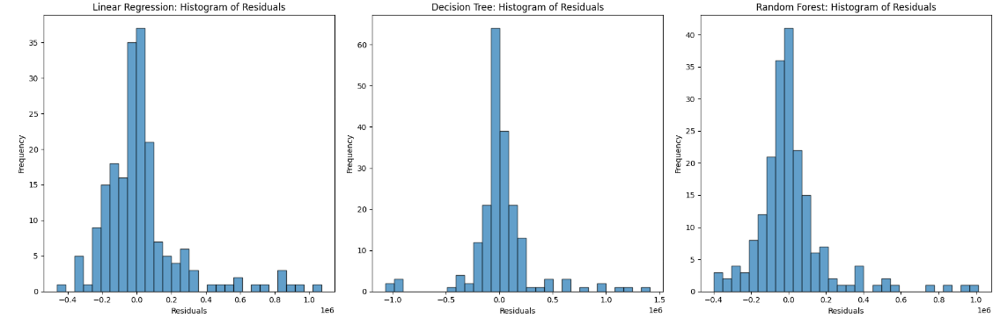
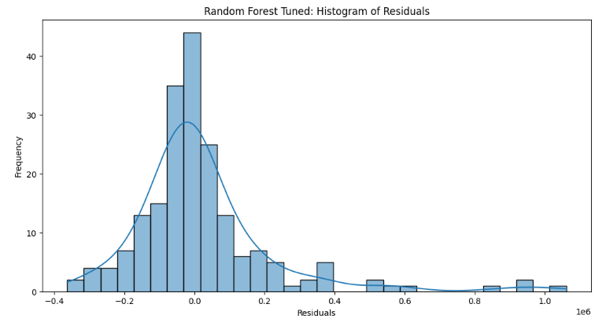
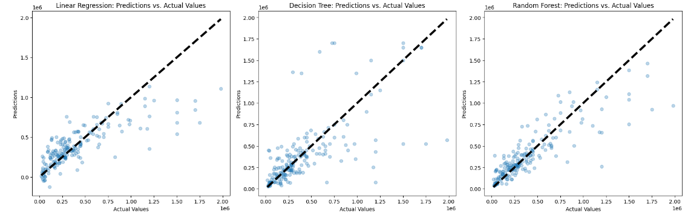
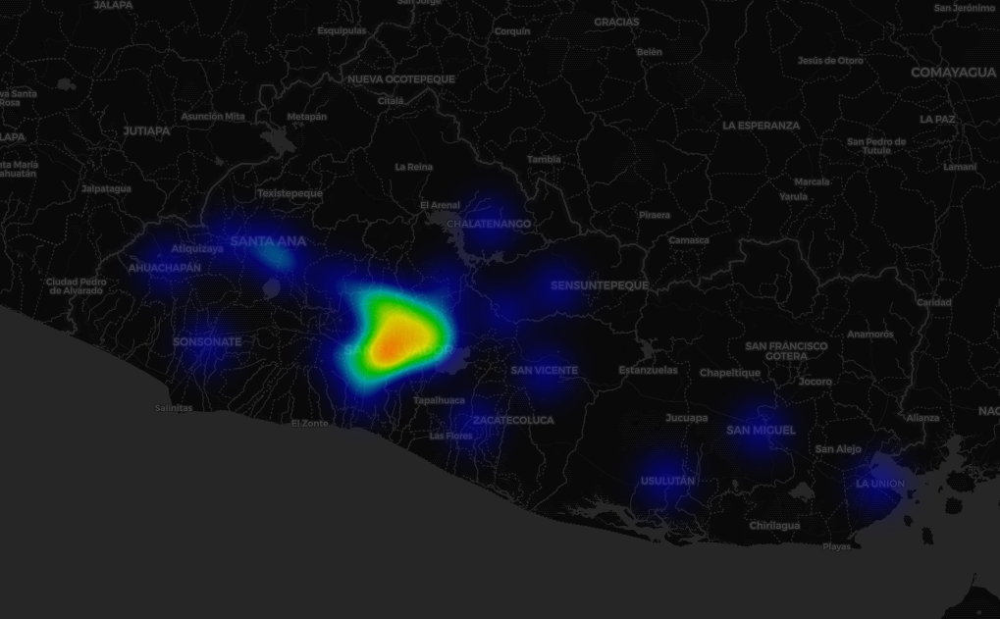

Author: Manuel Ventura
The real estate market in El Salvador is a dynamic and complex sector that requires comprehensive analysis to uncover underlying trends and provide valuable insights. This project aims to analyze a dataset of properties in El Salvador, focusing on exploratory data analysis, predictive modeling, and visualization. By leveraging various data science techniques, we aim to predict property prices and identify key factors influencing the real estate market.
Data science plays a pivotal role in the real estate industry by enabling data-driven decision-making. Key components of data science in real estate include:
Machine learning models are used to predict property prices, identify market trends, and optimize investment strategies. Commonly used models in real estate include:
The dataset used in this analysis comprises various attributes of properties listed for sale in El Salvador. The main columns include:
Below are the summary statistics of the dataset, providing an overview of the data distribution:
| Metric | Count | Mean | Std Dev | Min | 25% | 50% | 75% | Max |
|---|---|---|---|---|---|---|---|---|
| Price | 980 | 374913.44 | 342244.45 | 110000.00 | 150000.00 | 279000.00 | 450000.00 | 1980000.00 |
| Square Meters | 980 | 238.53 | 228.28 | 102.67 | 126.00 | 206.00 | 300.00 | 1350.00 |
| Bedrooms | 980 | 3.32 | 1.47 | 0.00 | 3.00 | 3.00 | 4.00 | 8.00 |
| Parking | 980 | 2.88 | 1.85 | 1.00 | 2.00 | 2.00 | 3.00 | 12.00 |
| Bathroom | 980 | 2.71 | 1.41 | 1.00 | 2.00 | 2.00 | 3.00 | 6.00 |
| Cluster | 980 | 0.31 | 0.54 | 0.00 | 0.00 | 0.00 | 1.00 | 2.00 |
| Latitude | 980 | 13.72 | 0.13 | 13.52 | 13.67 | 13.69 | 13.71 | 14.00 |
| Longitude | 980 | -89.24 | 0.27 | -89.89 | -89.29 | -89.22 | -89.21 | -88.75 |
| Location Num | 980 | 4.65 | 2.76 | 0.00 | 3.00 | 4.00 | 7.00 | 33.00 |
| Lin Reg Pred | 980 | 386882.76 | 225249.84 | -1365657.06 | 12794.56 | 31503.81 | 501095.26 | 1206232.00 |
| Tree Pred | 980 | 370211.56 | 397904.84 | 110000.00 | 150000.00 | 278518.89 | 450000.00 | 1850000.00 |
| Forest Pred | 980 | 374477.56 | 300524.83 | 88818.86 | 174295.00 | 282518.00 | 470117.50 | 1630632.06 |
| Tuned RF Pred | 980 | 370225.29 | 280784.83 | 120925.00 | 176563.00 | 283174.00 | 464943.50 | 1481565.06 |
| Lin Reg Resid | 980 | 3206.15 | 213824.78 | -757249.06 | -94926.56 | -130974.89 | 614462.49 | 1452872.00 |
| Tree Resid | 980 | 39922.26 | 121243.52 | -1068257.86 | 0.00 | 0.00 | 0.00 | 1410000.00 |
| Forest Resid | 980 | -56418.85 | 190345.15 | -939202.05 | -365758.56 | -448791.93 | 187583.33 | 1020787.06 |
| Tuned RF Resid | 980 | 39681.15 | 138573.64 | -382859.15 | -47054.11 | -73487.11 | 29835.32 | 1057856.00 |
This bar chart shows the average property price in different locations across El Salvador, highlighting areas with higher average prices, indicating higher demand and possibly better infrastructure.

The boxplot illustrates the distribution of property prices per square meter. This helps in understanding the price variation across different properties.

This plot shows the distribution of Mean Squared Error (MSE) across different cross-validation folds, providing insight into the model's performance variability.

This bar chart displays the distribution of property sizes in square meters across different locations. It highlights the size variation of properties in urban versus rural areas.

The bar chart shows the importance of different features in predicting property prices, as determined by the Random Forest model. This helps identify which features have the most influence on the model's predictions.

This histogram displays the frequency distribution of property prices per square meter, providing an overview of price ranges and identifying common price points.

The histograms show the distribution of residuals (the difference between actual and predicted prices) for the various models. This helps in understanding the prediction errors of each model.

We employed several machine learning models to predict property prices, including:
The performance of each model was evaluated using Mean Squared Error (MSE) and R-squared (R²) metrics. The results are summarized below:
| Model | MSE | R² |
|---|---|---|
| Linear Regression | 476451420.010747 | 0.5928151204195274 |
| Decision Tree | 1745996062.4757835 | 0.8507845435038352 |
| Random Forest | 12051550204.153212 | 0.8970056345574438 |
| Tuned Random Forest | 1919093419.381012 | 0.8359216523736016 |
Analyzing the residuals helps
in understanding the errors made by the models. Below is the residuals plot for the Tuned Random Forest model, which shows the difference between actual and predicted prices.

This plot compares the actual property prices with the predictions made by the models, providing a visual representation of model accuracy.

A heat map was created to visualize the density of properties in different regions of El Salvador. This map helps in identifying areas with higher concentrations of property listings.

This analysis provides a comprehensive overview of the real estate market in El Salvador. By leveraging data science and machine learning techniques, we were able to uncover key insights and build predictive models to estimate property prices. The findings can help stakeholders make informed decisions and optimize their strategies in the real estate market.
This report aims to offer a detailed analysis of the real estate market in El Salvador, utilizing various data science techniques to derive meaningful insights and accurate predictions. The visualizations and models presented provide a comprehensive understanding of the market dynamics, aiding in better decision-making for stakeholders.